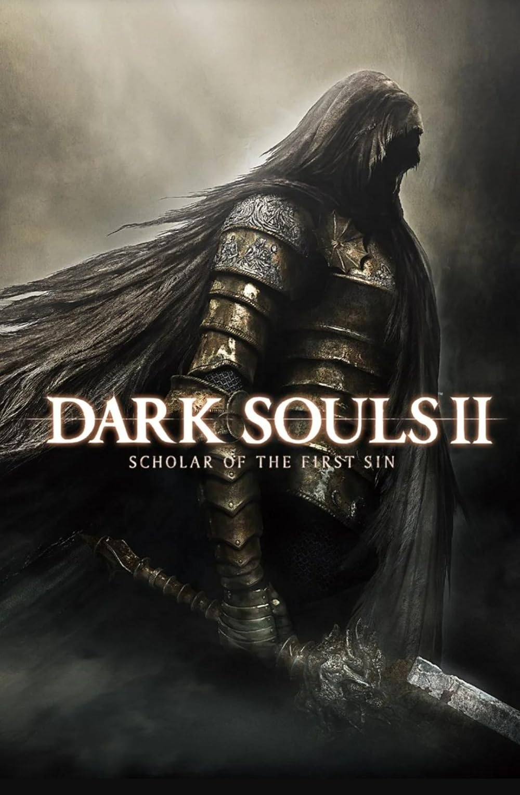

Dark Souls 2
Descripción
Dark Souls II es un videojuego de rol de acción desarrollado por FromSoftware...
Requisitos Mínimos
- Sistema operativo: Windows 7 64-bit
- Procesador: Dual Core 2.4 GHz
- Memoria: 4 GB de RAM
- Gráficos: Nvidia GeForce 9600GT o similar
- DirectX: Versión 9.0c
- Red: Conexión de banda ancha a Internet
- Almacenamiento: 15 GB de espacio disponible
Requisitos Recomendados
- Sistema operativo: Windows 7 64-bit o superior
- Procesador: Quad Core 3.0 GHz
- Memoria: 8 GB de RAM
- Gráficos: Nvidia GeForce GTX 660 o similar
- DirectX: Versión 11
- Red: Conexión de banda ancha a Internet
- Almacenamiento: 15 GB de espacio disponible